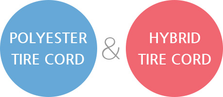

산업자재
타이어코오드

1973년 타이어 코오드 사업에 진출한 이후 코오롱인더스트리㈜는 국내업체뿐만이 아니라, Michelin, Bridgestone, Goodyear, Continental 등의 해외업체로부터 품질과 기술을 인정받고 있습니다. 타이어 코오드지는 타이어 보강재로서, 타이어 형태 유지 및 자동차의 중량을 지탱하는 등 마치 인체의 뼈대처럼 타이어 성능에 결정적인 역할을 합니다. 제조공정은 중합, 방사의 과정을 거쳐 제조된 고품질의 나일론과 폴리에스터 원사를 연사와 제직의 공정을 거쳐 직물의 형태를 갖춘 다음 접착성 용액(Latex)을 직물에 묻혀 고무와의 접착성을 높이고, 타이어 코오드 직물의 치수 안전성을 높이기 위하여 열처리를 합니다
polyester tire cord
형태안정성이 높고, Flat spot 현상이 적으며, 내열성 및 조정성이 좋아 주로 승객용 Radial Tire에 사용됩니다.
hybrid tire cord
두 가지 이상의 소재를 조합하여 소재의 약점을 극복, 최적의 성능을 발현하며 Premium 타이어에 사용됩니다.